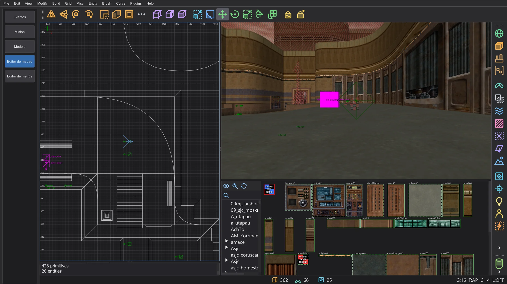
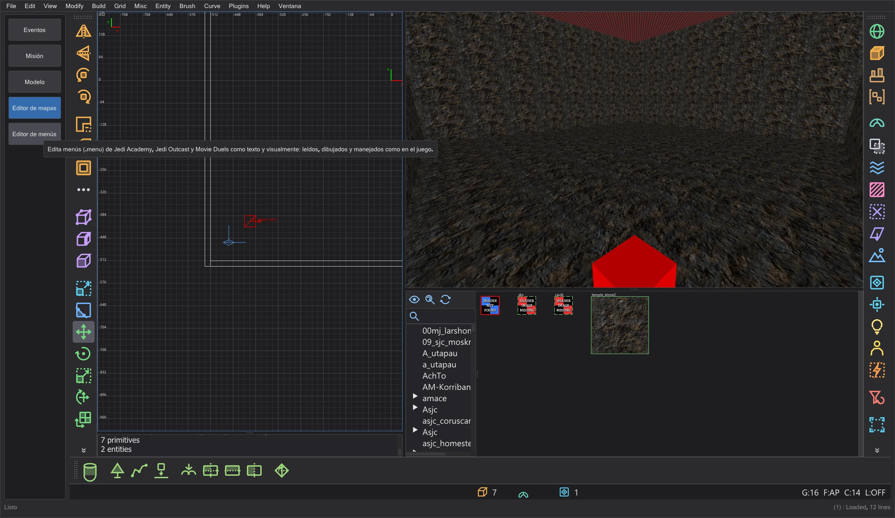
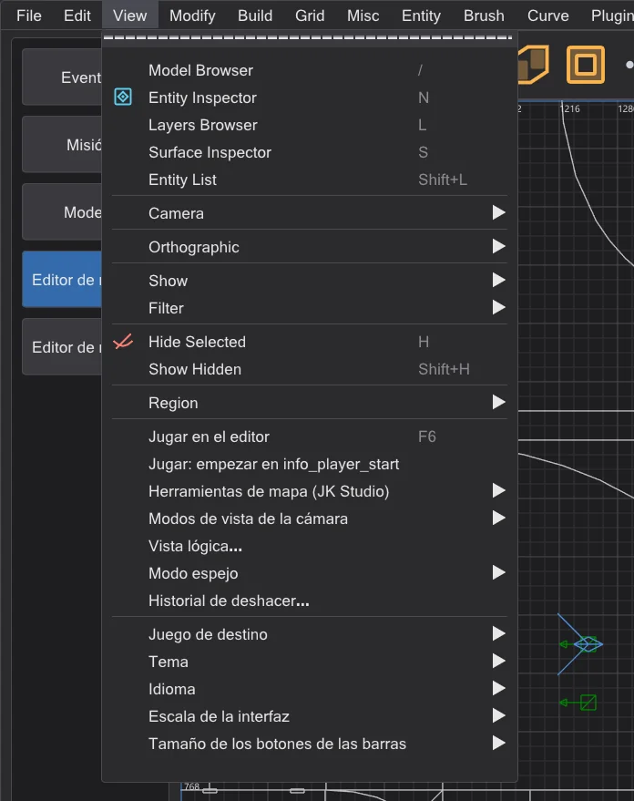
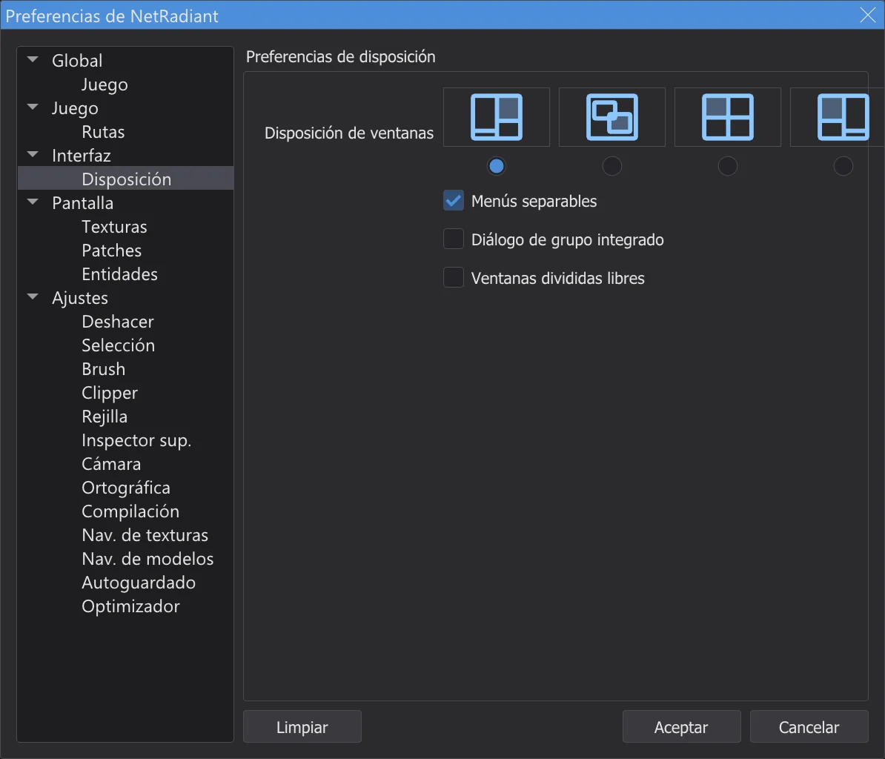
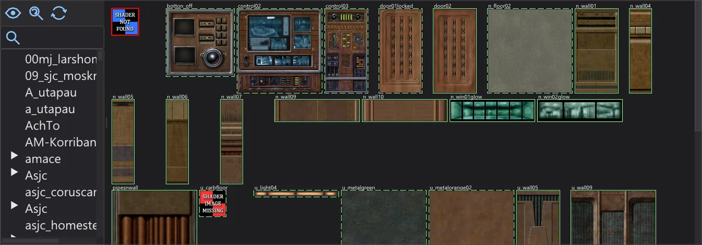
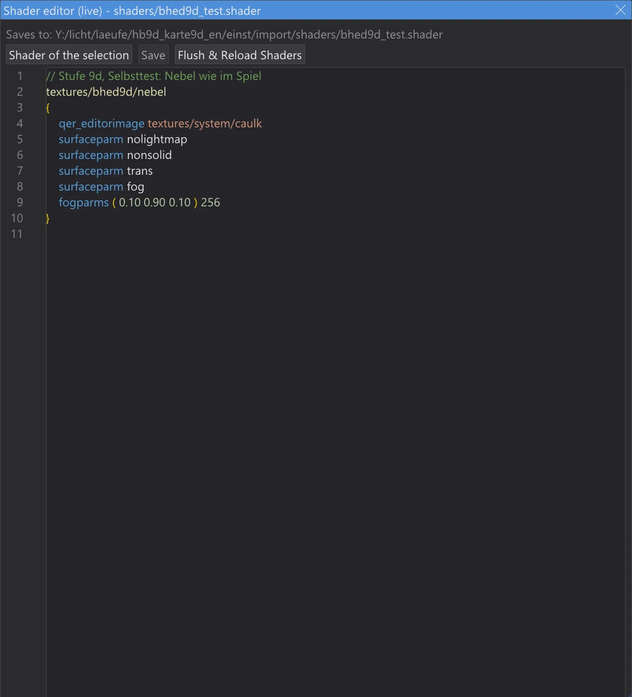
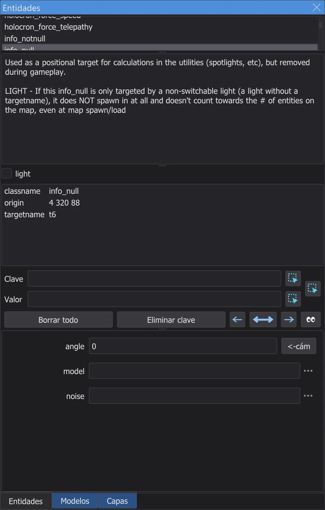
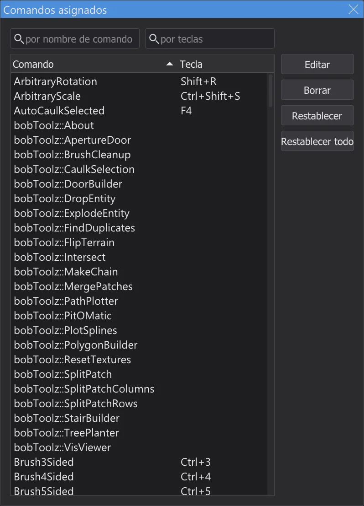

El editor de mapas
Crea y edita mapas para Jedi Academy y Jedi Outcast, con los menús, ventanas y atajos de NetRadiant-Custom, para que los tutoriales escritos para él funcionen paso a paso.

Abrir y guardar mapas#
Cambia a Editor de mapas en la barra de modos. El editor trabaja con el juego para el que está configurado el programa (Jedi Academy, también con Movie Duels, o Jedi Outcast) y sus texturas, shaders y definiciones de entidades; la primera vez los carga en segundo plano. Sin carpetas del juego en los ajustes del programa no hay texturas; en Preferences (páginas Juego y Rutas) el editor de mapas también puede usar otro juego y otras carpetas. File > New Map empieza un mapa vacío, Open (Ctrl+O) abre un archivo .map, Abrir .bsp un mapa compilado del juego (página Editor de mapas: abrir y cambiar mapas terminados), Save (Ctrl+S) y Save as lo escriben; como en NetRadiant-Custom, el archivo anterior se conserva como .bak. Los últimos mapas abiertos están al final del menú File. Antes de cerrar un mapa con cambios sin guardar, el editor pregunta si guardarlo.
Menús, ventanas y disposiciones#
Los menús, barras y diálogos están dispuestos como en NetRadiant-Custom (versión 20260114): el mismo orden, separadores, atajos y mnemónicos (Alt + la letra subrayada). Los nombres de menú se quedan en inglés como en NetRadiant-Custom; los diálogos y descripciones están en el idioma del programa y los colores vienen de la combinación de colores del programa. Los plugins se describen en la página Editor de mapas: plugins. Las herramientas de construcción se describen en la página Editor de mapas: herramientas de construcción, la compilación con q3map2 en Editor de mapas: compilar el mapa.
Barras de herramientas: como en NetRadiant-Custom, Open, Save, Undo, Redo y Select Touching están ocultos por defecto en la barra principal; haz clic derecho en una barra y márcalos para mostrarlos. Cada barra tiene un asa (la franja punteada al principio): arrástrala para acoplar la barra principal, la de filtros o la de plugins a otro borde (arriba, izquierda, derecha, abajo). El borde y el orden se mantienen tras reiniciar.

En el editor de mapas, la barra de menús del programa se convierte en la de NetRadiant-Custom (File ... Help): solo hay una, las pestañas de script se ocultan y el editor empieza justo debajo. Lo que el programa necesita también aquí se añade al final de dos menús: Misc tiene Idioma, Combinación de colores y Escala, Help tiene Manual (F1, esta guía) y Acerca de JK Studio; Check for NetRadiant update busca una versión nueva de este programa. Salir del modo en la barra de modos devuelve los menús y las pestañas del programa.
Cada ventana del editor (las vistas 2D, la cámara, la consola y el navegador de texturas) tiene un marco fino, para que veas dónde termina una y empieza la siguiente; entre ellas está el divisor de NetRadiant-Custom con sus puntos de agarre. La ventana activa (la última que pulsaste) tiene el marco en el color de acento de la combinación de colores, igual que NetRadiant-Custom remarca la vista 2D activa (View > Show > Show Window Outline lo desactiva para las vistas 2D). Arrastra un divisor para cambiar el tamaño de las ventanas; arrastrada hasta el borde, una ventana se pliega y se puede volver a sacar.

Edit > Preferences (P) contiene las preferencias de NetRadiant-Custom. En la página Disposición eliges la disposición de ventanas (Normal, Flotante, Dividida o Normal a la izquierda) y si el diálogo de grupo con entidades y texturas va en la ventana principal (Diálogo de grupo integrado). La nueva disposición se aplica en cuanto pulsas Aceptar; NetRadiant-Custom necesita reiniciar para eso. En Flotante las ventanas flotan dentro de la ventana del programa.

Vista 2D y cámara#
| Arrastrar con el botón derecho (2D) | Desplazar la vista |
| Rueda, Alt + arrastrar con el botón derecho (2D) | Zoom |
| Ctrl + Tab | Vista 2D siguiente (XY, XZ, YZ) |
| Botón central (2D) | Gira la cámara hacia el punto; con Ctrl la cámara se mueve allí |
| Clic derecho en la cámara | Activa y desactiva la vista libre: el ratón gira la vista, W A S D o las flechas mueven |
| Flechas (cámara) | Adelante, atrás, girar; A / D de lado; la rueda mueve adelante y atrás |
| Tab | Cámara a la selección |
| Mayús + [ / ] | Cómo dibuja la cámara (alambre, plano, texturizado ...) |
| [ / ] | Rejilla más pequeña / más grande; 1 ... 9 la fijan directamente (de 1 a 256 unidades) |
Seleccionar y construir#
| Clic izquierdo | Selecciona lo que hay bajo el ratón; otro clic en el mismo sitio selecciona lo que hay detrás |
| Mayús + arrastrar con el botón izquierdo | Selecciona (o deselecciona) todo lo que toca el ratón |
| Mayús + arrastrar con el botón derecho | Seleccionar con un rectángulo |
| Ctrl + botón izquierdo (cámara) | Seleccionar caras sueltas |
| Arrastrar con el botón izquierdo sobre la selección | La mueve; junto a un brush seleccionado: tira de sus caras para cambiar su tamaño |
| Arrastrar con el botón izquierdo en un espacio vacío (2D, nada seleccionado) | Dibujar un brush nuevo con la textura actual |
| Esc | Quitar la selección |
| Espacio | Duplicar la selección |
| Supr | Eliminar la selección |
| Ctrl + Z | Deshacer |
| Ctrl + Mayús + Z | Rehacer |
| Ctrl + C / V | Copiar / pegar |
| H | Ocultar la selección |
| Mayús + H | Mostrar todo lo oculto |
Texturas#

El navegador de texturas muestra las texturas y shaders del juego, carpeta a carpeta. En la disposición Normal está debajo de la cámara; en las demás disposiciones lo abre View > Texture Browser (T). Un clic en una textura la hace actual y la pone en los brushes o caras seleccionados; el botón central solo la elige. Arrastrar con el botón derecho desplaza, un clic derecho abre el menú de la textura. En la cámara, el botón central sobre una cara toma su textura; junto con Ctrl o Mayús pinta la textura actual en las caras, como en NetRadiant-Custom. Editar shader en vivo... (no está en NetRadiant-Custom) en ese menú abre el archivo de shaders en un editor con colores de sintaxis y el margen del editor de scripts (números de línea, marcas de cambios); Guardar nunca escribe en la carpeta del juego (un archivo de shaders del juego va con el mismo nombre a la carpeta de importación, que va primero en la ruta de búsqueda), y los shaders, el navegador de texturas, la cámara y la luz en tiempo real se recargan enseguida. Cualquier cambio en un archivo .shader de la carpeta de importación (también desde otro editor de texto) también los recarga.

Imagen aún en inglésEntidades#

Un clic derecho en la vista 2D (sin mover el ratón) abre el menú de entidades: elige una clase para colocar una entidad nueva en ese punto. Si hay brushes seleccionados y eliges una clase de brushes como func_door, los brushes se convierten en esa entidad. View > Entity Inspector (N) muestra la entidad seleccionada: su clase con la descripción, los spawnflags como casillas, todas las claves y valores, y campos para las claves que conoce la clase. Escribe una clave y un valor y pulsa Intro para fijarla. View > Entity List (Mayús+L) lista todas las entidades del mapa. Entity > Connect Entities (Ctrl+K) enlaza dos entidades seleccionadas con target y targetname.
Consola#
La consola (en la disposición Normal debajo de la vista 2D, si no View > Console, O) muestra los mismos mensajes que NetRadiant-Custom: qué se cargó, avisos de texturas y shaders que faltan y cuánto tardaron la carga y el guardado.
Atajos#

El editor de mapas tiene los atajos de NetRadiant-Custom. Valen mientras se muestra el editor de mapas; los atajos propios del programa están entonces desactivados. Edit > Shortcuts (Ctrl+Mayús+P) lista cada comando con su tecla; los campos de arriba buscan por nombre de comando o por teclas. Haz doble clic en un comando (o pulsa Editar) y luego la tecla nueva; Borrar quita la tecla, Restablecer recupera la tecla de NetRadiant-Custom, Restablecer todo todas. Si la tecla ya pertenece a otro comando, el editor pregunta antes.
[ y ] necesitan AltGr (en español con las teclas a la derecha de la P; en alemán AltGr+8 / 9), siguen funcionando: [ y ] cambian la rejilla, y Mayús+AltGr con esas teclas cuenta como Mayús+[ / ]. Pero Ctrl+[ y Ctrl+] (Far Clip Plane In / Far Clip Plane Out) no se pueden pulsar, porque AltGr ya cuenta como Ctrl+Alt, exactamente como en NetRadiant-Custom. Usa el menú View > Camera, o da a los comandos CubicClipZoomIn y CubicClipZoomOut otras teclas en Comandos asignados.